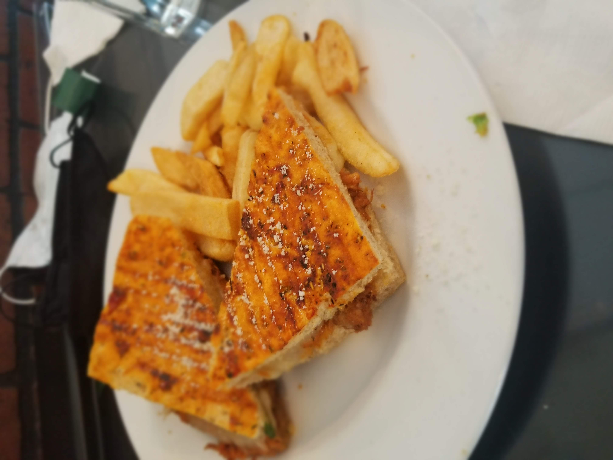

Choose Your Adventure!
Select a location to learn more about what we recommend as far as sights to see, food to eat, and places to rest up after your eventful days!
Moab, Utah
Things to do:
Moab has numberous trails for hikers, bikes, horses, and off-raod vehicles that reward the adventurer with a beautiful view and some spectaculor natural rock formations in bright red rocks.
Delicate Arch: moderate challenge, 3 miles.
Devil's Garden Trail to Landscape Arch: easy-moderate challenge, the iconic arch of Moab, 1.9 miles.
Devil's Garden Trail to Double 0 Arch: moderate-difficult challenge, large slopes, high view, 4.2 miles.
Firey Furnace Trail: moderate, guided tours only, 1.8 miles.
Grandstaff Canyon Trail to Morning Glory Natural Bridge: easy-moderate, 5 miles.
Sand Dune Arch: easy, sandy trail, 0.2 miles.
Double Arch Trail: easy, 0.6 miles.
Gallery


Day Trips
Doing several hikes in one day is fun, but if you want more of a full day excursion, this is what we would recomend.
Needles, Eye of the Whale, Newspaper Rock, Canyonlands, Dead Horse Point, Fort Bluff.
Food Recomendations
There are several local places that we love to eat at! The Moab Diner is an old school establishment that serves a mean burger and breakfast all day. If you're looking for something different than your All-American food, there are other great options on top of the food truck located in the national park.
Arches Thai, Pasta Jay's, and Antica Forma are all other great places to eat if you want something more sit down. Thai food, pasta, and pizza can really hit the spot after a long day of hikes.
Travel Tips
It gets really hot in Moab/Arches National Park. Best time to go is March-May, and September-October. Some hikes might require you to cross streams. Make sure you have shoes designed for hiking in water as well as shoes with good traction for hiking on sandstone. Get to the park early. There is always a long line of cars waiting to enter and they may have started to limit the number of cars entering.
Alaska
Things to do:
Juneau
Mendenhall Glacier and hike to Nugget Falls. Make sure to catch the view of the glacier from the visitor's center.
Guided tour through Glacier Gardens. Be surprised at the variety of flowers and plants that abound in the Tongass National Forest. Highlight was seeing upside-down trees with flowers and plants growing from the root systems.
Macaulay Salmon Hatchery. Learn the life-cycle of Alaska's salmon species and see salmon at different stages, from smelt to adult who return to the native streams at the end of life.
Sitka
Catamaran tour around the barrier islands of Sitka. Sightings of whales, sea lions, eagles, harbor seals and sea otters.
Alaska Raptor Center. This is a rescue and rehabilitation facility for injured birds of prey, including the American bald eagle. One-time visit.
Fortress of the Bear. This is a rescue facility where you can view and photograph brown and black bears. One-time visit. Wouldn't go back next time.
Ketchikan
Great Alaskan Lumberjack Show. Learn about Alaska's logging history as lumberjacks compete in various lumberjack events such as chopping, sawing, tree climbing and log rolling.
Totem Bight State Park. See one of the worlds largest collections of totem poles and authentic native clan house.
Victoria, B.C
Guided walk into Victoria. Highlights include Beacon Hill Park, downtown Victoria, BC Legislature Building and Empress Hotel. I would recomend doing this tour when there is still light out.
Gallery

Travel
These locations are fairly far away from one another to be taking a road trip every day to see each of them. That's why we actually stayed on a cruise ship, we traveled over a day and night, and then we had a day to be on the land where we planned to do these excursions. We had some relaxation down time while on the ocean, plus there were some pretty incredible sights to see while on the open Alaskan waters.
We also had a lot of meals on the cruise, which had a variety of options to choose from, as well as a nicer dinner hall.
Food Recomendations
Seafood is a staple and must try while on a cruise, especially an Alaskan one. I would recomend the halibut point crab and chowder, as well as your standard fish and chips and clam chowder.

Travel Tips
When on a cruise, it's best to not schedule excurions for every port you visit so you can save time to enjoy the local restaurants and peruse the area for souvenirs. Alaska is a place best visited in the warmer months to avoid uncomfortably cold weather. When we went, we goot rain gear, but we didn't really need any heavy clothing.
Outer Banks, North Carolina
Things to do:
Lighthouses- Currituck, Bodie Island, and Cape Hatteras. We were there in March and the Currituck lighthouse was the only one open to climb. We climbed 220 steps to the top.
Wright Brothers National Memorial-Replica and monument to the first flight. Excellent museum with markers showing the distance of each of the flight attempts
Jockey's Ridge State Park-Tallest active sand dune in the Eastern United States. Great place to fly a kite
Elizabethan Gardens-Traditional English garden
Fort Raleigh Historical Site-Location of the first English settlement in the United States in 1587. In the summer time there is a popular symphonic drama called “The Lost Colony” that would be fun to go to.
North Carolina Aquarium on Roanoke Island-Great little aquarium with a good variety of exhibits.
Norfolk, Virginia-tour of Battleship Wisconsin and adjoining Nauticus Museum. This is a great “day-trip” to take on a rainy day on the Outer Banks
Gallery

Lodging
There are a few hotels that you can stay at, but we recomend renting a beach-front house for easy ascess to the beautiful ocean.
Food
Dirty Dicks Crab House, Nagshead-recommend the She-crab soup.
The Kill Devil Grill-Meatloaf was exceptional as was the Mahi-Mahi
Travel Tips
Many activities are not open/available until May. We went in March and it was chilly. Not really beach weather, and only one of the lighthouses was open to climb.
Maui, Hawaii
Thinks to do:
Road to Hana-narrow winding roads and bridges. Beautiful waterfalls and beaches along the way. Make sure to hike the Pipiwai Trail through a bamboo forest and passed a large banyon tree ending at Waimoku Falls, which is 400 feet high
Surfing lessons-If you want to try surfing splurge for an experienced instructor at a surf school. We used Maui Wave Riders. The instructor was excellent
Swap Meet-buy all your souvenirs for cheaper than the local stores.
Snorkeling at various beaches, Molokini Crater and Turtle Town. There was great snorkeling at many beaches and Molokini Crater was amazing.
Haleakala National Park-stark volcanic landscapes beautiful sunset. Make sure to dress as warm as you can-dress in layers. It gets very cold when the sun sets. Would also love to see the sunrise.
Gallery

Lodging
Condo rentals are readily available and provide all the necessities such as beach towels, boogie boards, beach chairs, and a washer and dryer. That will also give you the option to eat/pack your own meals.
Food
All the places we ate at were recomended by other tourists and locals alike. Our favorites were:
Paia Fish Market, Maui Thai Bistro, Fabiani's Bakery and Pizzeria, Brigit & Bernard's Garden Café, Kula Bistro.
Travel tips
Rent snorkel equipment-would recommend upgrading to premium snorkels and make sure to get fins.
Shop for food and supplies at the local Costco.
Take Dramamine before getting on the boat or driving to Hana or Haleakala if you are prone to motion sickness. The roads are very curvy and winding.
Central air conditioning throughout the condo would be a plus.
Wear comfortable hiking/water shoes on the Road to Hana.
Western Caribbean
Things to do:
New Orleans
We didn't plan extra time to tour New Orleans before or after our cruise. Would recommend arriving day early tour historical sites and attractions
Cozumel
Tulum- Take a ferry to Playa Del Carmen and a 1 hour narrated bus ride to view and tour incredible Mayan ruins at the Ancient City of Tulum
Wildlife you might see are the Yucatan black howler, spider monkeys, agouti, white-nosed coati, and iguanas
Watch the Palo Volador, or the dance of the flyers performance. Four dancers scale a wooden pole and then twirl and spin on ropes as they descend to the ground. A fifth person remains on top of the pole playing musical instruments.
Belize
Tender from the ship to the Tourist Village in Belize City
Shore excursion-Belize Cave Tubing Tour. Beautiful hike along the river through the forest before floating through underwater caverns. Float tubes, life vests, helmets and headlamps provided.
Roatan
Shore excursion to Maya Key Private Island. Beautiful Beach. We were shuttled to Maya Key on a catamaran. On the way back it was a torrential downpour. We were drenched when we got back to the cruise terminal. We had to walk through the shops dripping wet. They handedout towels when we boarded the ship.
Snorkeling from a pier- It was stormy and big waves prevented us from enjoying the snorkeling. Cuts from being pushed into the coral.
Wildlife Rescue Center and Sanctuary-Animals on exhibit Included jaguars, ocelots, birds, monkeys and iguanas.
Gallery


Lodging
We took a cruise in the Western Caribbean out of New Orleans. Cruise disembarks early in the morning so plan your departing flight so you aren't waiting in the airport for hours, or find somewhere to store your luggage so you can tour the city. Some cruise lines provide a service where they will deliver your luggage to the airport and check them in for you. Saves you from paying overweight baggage fees
Would recommend arriving a day early to tour historical sites and attractions.
Food
We ate some amazing food both in the New Orleans port, on the ocean, and in the different destinations on the cruise.
New Orleans
Mother's Restaurant-Authentic N'Awlins home-style cooking. Tons of food and everything was delicious. We had a platter that included Crawfish Etouffee, Jambalaya, Red Beans & Rice. The bread pudding was excellent.
Had the best Shrimp Po'Boy Sandwich ever at a sit-down restaurant in the New Orleans airport while waiting for our flight home.
Café du Monde-make sure to stop and have beignets.
Cozumel
We had Mexican food from a restaurant just outside the entrance of Tulum. Was recommended by the tour guide, but it was really the only place to sit down and eat.
Belize
Our tour guides provided an authentic meal for us. It was delicious.
Roatan
We had a yummy catered lunch of fried fish and fried potato and plantain chips.

Travel Tips
Buy prescription drugs at the pharmacy
We booked our excursion through a private tour company, not the cruise line. Make sure they know your “back on board” time. Since it is not through the cruise line the cruise could leave without you if you are not back on board
You can't realty predict the weather when booking shore excursions so be prepared for anything and be flexible.
Puerto Vallarta, Mexico
Things to do:
Whale watching tour through a more local company, Celito Lindo. We saw lots of whales. We were served pastries and juice for breakfast and sandwiches, chips and salads for lunch. The crew was good. At one point the captain turned of the engines and lowered a microphone so we could hear the whales. It was amazing until he couldn't get the engine started again. We were stranded on the water several hours until another boat came to tow us back to the harbor. Another time would book all our tours through Vallarta Adventures
Snorkeling to Islas Marietas: This is a protected part of Islas Marietas National Park. They had strict snorkeling guidelines which made it difficult. You couldn't put on your mask until you had jumped into the water, you were supposed to follow a guide in and out of the snorkeling area, and it was a little windy and water was choppy, which wasn’t the best environment for clear viewing of fish and coral. Also, the tour company only provided the mask and life vests. The snorkels were basic and didn't come with one-way purge valves. No flippers were provided which made snorkeling harder than it needed to be
Majahuitas private island beach-included as part of the Islas Marietas snorkeling tour. The catamaran stops off shore and you jump into the water and use a rope to help walk/pull yourself to shore. It was a little difficult. There were plenty of crew members available to help, so that was nice. The sand wasn't nice beach sand, and there were a lot of other tours there, so it was a little crowded at times.
Dinner cruise and Rhythms of the Night Show by Vallarta Adventuresthis was an amazing excursion to Las Caletas on a cruise through Banderas Bay. When we arrived at Las Caletas, we walked up a candle and torch-lit path to our table overlooking the water. The sun was just setting. The dinner was so good. All the food you could eat, and it was delicious. We then walked a short distance to an outdoor amphitheater where we were treated to a cultural show featuring dance, acrobatics and music. The trip back to Puerto Vallarta was beautiful. The skyline and lights were amazing. The crew was outstanding. Cannot recommend this excursion enough!
Strolling, shopping and dining on the Malecon-a sidewalk along the coast with beautiful views of the Pacific Ocean, sculptures, restaurants, craft and souvenir booths. Also watched performance of Voladores de Papantla, men dressed in colorful traditional clothing who perform a special dance while spinning around a pole on ropes.
Church of Our Lady of Guadalupe-beautiful Catholic church with a crown on the steeple.
Bean to Bar Chocolate Workshop-this is a fun workshop to have a handson experience of learning the process of getting chocolate from cacao beans. You'll make and taste Mexican chocolate drinks and make bonbons to take with you.
Gallery
.jpg)
Lodging
We booked to stay at The Crown Paradise Club all-inclusive resort (Kid and family friendly) and were upgraded to the Crown Paradise Golden (Adult). It was okay, but would try a different one another time.
Food
All-Inclusive buffet, Bellavista Cafeteria-average buffet. All-Inclusive restaurants included Salvador's and Paradise, also average. Dinner cruise to Las Caletas-amazing buffet style dinner. Best meal of the trip. Restaurant on Malecon-traditional Mexican dishes, virgin spicy mango smoothies, lemonade, and tortilla chips with a huge bowl of guacamole. One of the best meals of the trip.
Travel Tips
We flew back to the U.S. late on Christmas Eve, and couldn't find even a fast food restaurant open. We settled for munchies from the gas station.
We used Taxi's to get around to the places that were not within walking distance. They felt safe and fares were reasonable
Constant interruptions from beach vendors while trying to relax on the beach. If possible try to find a beach that prohibits vendors
Bring your own snorkel equipment or find rental equipment so you have a snorkel with a one-way purge valve and flippers.